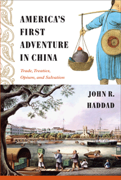

<body bgcolor="#FFFFFF" text="#000000" link="#0000FF" vlink="#CC0000" alink="#CC0000"><center><hr width="350" size="1" align="center" noshade>A lively account of the brash men who chased their American Dreams all the way to China<hr width="350" size="1" align="center" noshade><p><a href="https://cdcshoppingcart.uchicago.edu/Cart/ChicagoBook.aspx?ISBN=9781439906897&&PRESS=temple" target="_top">Buy this book!</a> | <a href="https://cdcshoppingcart.uchicago.edu/Cart/Cart.aspx?PRESS=temple" target="_top">View Cart</a> | <a href="https://cdcshoppingcart.uchicago.edu/Cart/Cart.aspx?PRESS=temple" target="_top">Check Out</a></p><p></p></center><!--none//--><h1>America's First Adventure in China</h1>
<H2>Trade, Treaties, Opium, and Salvation</H2>
<h3>John R. Haddad</h3>
<P>cloth 1-4399-0689-0 $80.50, Mar 13, <FONT COLOR=#990033>Available</FONT>
<br>paper 1-4399-0690-4 $28.95, Apr 14, <FONT COLOR=#990033>Available</FONT>
<br>Electronic Book 1-4399-0691-2 $28.95 <FONT COLOR=#990033>Available</FONT>
<BR> 294 pp
6x9
10&nbsp;halftones
</P><BLOCKQUOTE><I>"John Haddad has written a subtle and spirited book, which takes America's first experiences in China as a means to explore the early years of the United States as an independent nation. This is a book about the magic of money and the ingenious ways that American business grandees reacted to the ever-shifting promises and disappointments of an emerging Asian market. It is also a book about religion, diplomacy, financial systems, arms manufacture, families under stress, ship-building, and opium. It is an absorbing tale, with many contemporary echoes."</I> <BR>&#151<B>Jonathan Spence</B>, author of <I>The Search for Modern China</I></I></BLOCKQUOTE>
<P>In 1784, when Americans first voyaged to China, they confronted Chinese authorities who were unaware that the United States even existed. Nevertheless, a long, complicated, and fruitful trade relationship was born after American traders, missionaries, diplomats, and others sailed to China with lofty ambitions: to acquire fabulous wealth, convert China to Christianity, and even command a Chinese army.
<P>In <I>America's First Adventure in China</I>, John Haddad provides a colorful history of the evolving cultural exchange and interactions between these countries. He recounts how American expatriates adopted a pragmatic attitude�as well as an entrepreneurial spirit and improvisational approach�to their dealings with the Chinese. Haddad shows how opium played a potent role in the dreams of Americans who either smuggled it or opposed its importation, and he considers the missionary movement that compelled individuals to accept a hard life in an alien culture.
<P>As a result of their efforts, Americans achieved a favorable outcome�they established a unique presence in China�and cultivated a relationship whose complexities continue to grow.
<BR>&nbsp;<h2>Excerpt</h2><P>Excerpt available at <a href="http://www.temple.edu/tempress">www.temple.edu/tempress</a></p>
<BR>&nbsp;<h2>Reviews</h2>
<p><I>"</I>America's First Adventure in China<I> is a well written, succinct, and elegant book. Haddad brings a fresh approach to�and makes a convincing case for his characterization of�the American presence in China. He describes how the Americans were isolated individuals acting pretty much on their own and with nothing in the way of state, military, or other institutional support. Their experience�operating in a fog of ignorance about a world to which they had only the most limited access�is significant, and he explains why the American experience diverged from rather than followed on the British model."</I><br>&#151<b>Peter Buck</b>, Senior Lecturer (retired) on the History of Science, Harvard University
<p><I>"Haddad has again struck the right note with this well-researched work on the first hundred years or so of the U.S. relationship with China. He conveys his narrative with humor...[and] reveals the fascinating story of men such as Anson Burlingame. There are many such informative topics that Haddad shares with readers. His notes and bibliography are rich, while illustrations are few but first-rate. VERDICT Excellent for scholars of Chinese history and ideal for those who desire more than a cursory view of the subject."</I><br>&#151<b><i>Library Journal</b></i>
<p><i>"Haddad looks at the development of the relationship between China and the United States beginning in 1784. An intensely detailed story.... it provides some interesting descriptions about the beginnings of American trade with China in the late 18th century, when George Washington's aide-de-camp set off for Canton (modern-day Guangzhou).... Informative."</I><br>&#151<b><i>Publishers Weekly online</b></i>
<p><i>"Haddad tells a powerful story of the first epoch of Sino-American relations.... [He] bases his important synthesis on a wide range of English-language materials, journals, memoirs, and scholarly accounts that focus on more specific details.... Summing Up: Highly recommended."</I> <br>&#151<b><i>Choice</b></i>
<p><i>"Haddad's biographical approach provides for lively reading and colorful anecdotes of America's early encounters with China. Haddad argues that this first era of American-Chinese encounters from 1784 to 1870 succeeded not only in shaping the American imagination and its varied 'China dreams' but also created potential within China for a more sustained relationship.... Scholars, diplomats, policymakers, and businesspeople will find this compact history a useful read, as echoes of this early relationship, at the very least in its ability to inspire the imagination and dreams of both Americans and Chinese, continue unto the present."</I><br>&#151<b><i>Asian Affairs</b></i>
<p><i>"Haddad's engaging narrative is interspersed with vivid descriptions of the ups and downs of early Sino-American relations.... With careful nuance, Haddad analyzes the careers of Americans who smuggled opium into China as well as the minority who abstained on moral grounds.... Haddad and Temple University Press, a relative newcomer to the field of China studies, should be congratulated for producing a detailed history of the formative years of Sino-American relations."</I><br>&#151<b><i>The Journal of American History</b></i>
<p><i>"Haddad has produced a remarkably comprehensive and informed study of various aspects of early American relations with China..... [V]ery few [scholars] have attempted to produce the sort of broadly synthesized overview that Haddad presents here. Citing knowledgeably from the considerable body of secondary literature on the topic, while also mining interesting gems from the rich trove of primary source materials still awaiting scholarly evaluation, Haddad has contributed significantly to our understanding of this particularly momentous and colorful period in the early American experience in East Asia. Written in a style easily accessible to the general public, this book provides an excellent introduction to the stimulating range of subjects that constitute the history of America's first adventure in China."</I> <br>&#151<b><i>The Review of Politics</b></i>
<p><i>"What separates </i>America's First Adventure in China<i> from the existing scholarship is its sharp focus on a large number of individual Americans who interacted actively with the Chinese in many different areas.... With a unique approach, powerful arguments, rich biographical information, and clear writing, </i>America's First Adventure in China<i> can be an engaging and thought-provoking reading for college students, scholars, professionals in various fields, and the general adult audience."</I> <br>&#151<b><i>History: Review of New Books</b></i>
<p><i>"Haddad masterfully tells of early American dreams of striking it rich in China.... </i>America�s First Adventure in China<i> is erudite yet delightful to read. Haddad gives the reader dozens of well-told historical vignettes linked around central themes, most notably the connections between Americans� actions in China and intellectual currents at home." </i><br>&#151<b><i>American Studies Journal</i></b>
<p><i>"John Haddad has written an engaging and lucid account of Americans� early experience in Qing China... Drawing on an extensive array of primary and secondary sources, Haddad brings to life the American story of the U.S.�Chinese encounter through skillful biographical studies of important historical figures.... [A] useful book. Readers will close its pages with a lively sense of Americans� conscious pursuit of their own national identity in Qing China."</i><br>&#151<b><i>The Journal of the Early American Republic</i></b>
<p><i>"Haddad has produced a remarkably comprehensive and informed study of various aspects of early American relations with China, successfully demonstrating his contention that, owing to the lack of official structure during this era, Americans were compelled to adopt a distinctive style of pragmatism in their dealings with the Chinese that intensified their already pronounced individualistic tendencies.... Citing knowledgeably from the considerable body of secondary literature on the topic, while also mining interesting gems from the rich trove of primary source materials still awaiting scholarly evaluation, Haddad has contributed significantly to our understanding of this particularly momentous and colorful period in the early American experience in East Asia. Written in a style easily accessible to the general public, this book provides an excellent introduction to the stimulating range of subjects that constitute the history of America's first adventure in China." </i><br>&#151<b><i>Review of Politics</i></b>
<p><i>"Haddad characterizes the early years of U.S. involvement in China as an 'adventure,' and this book succeeds in providing a lively narrative of the years from the first American-Chinese trade contact in 1784 to the Burlingame Treaty in 1868. His approach is largely biographical, with vivid portraits of all the important players.... The first few chapters, from the earliest clipper ships and the Canton system through the development of a sophisticated China trade, are perhaps the most interesting, providing fascinating detail about the actual workings of the business, drawn from commercial records, private family papers, and secondary literature in American business history.... The general reader will find here a lively, entertaining adventure story."</i><br>&#151<b><i>American Historical Review</i></b>
<p><i>"John R. Haddad is to be congratulated for taking a large and long view of American relations with China, 1784�1870.... [T]he analysis of the intricacies of U.S. diplomacy through this period is quite good."</i><br>&#151<b><i>Pacific Historical Review</i></b>
<p><i>"</i>America�s First Adventure in China<i> is an impressive accomplishment. Haddad has crafted an engaging, historically grounded narrative that skillfully bridges the neighboring domains of American cultural studies and U.S. diplomatic history� The chronological signposts in Haddad�s story are familiar to many, but in his retelling, the familiar becomes intriguing.� Haddad is a skillful narrator�. [His] coverage is brisk, clear and engaging. </i>America�s First Adventure in China<i> is a valuable contribution to the literature on Sino-American relations, and a promising exemplar of postmodern narrative history."</i><br>&#151<b><i>Diplomatic History</i></b>
<p><i>"Based solidly on American archives and knowledge of Chinese, John Haddad�s book explores America�s early involvement in the Qing Empire at a period of intense external pressure from foreign powers.... This book will be welcomed for its balanced account and scholarly insights into the Chinese side of their encounters with a rising Western power."</i><br>&#151<b><i>Journal of Pacific History</i></b>
<p><i>"Haddad seeks, over the course of nine case studies, to demonstrate how the American presence in China between 1784 and 1870 was distinctly American. The work�s ambitious scope is laudable.... The book is engagingly and accessibly written, and smartly calls readers� attention to some of the contradictions in current scholarly understanding of the topic.... The chapter exclusively about early American Christian missionaries in China is an important innovation."</i><br>&#151<b><i>Journal of Asian Studies</i></b>
<p><i>"[The book is] particularly important for bringing matters of trade and commerce to light, matters that have been long overshadowed by studies of Chinese labor emigrations (both indentured and free) and the politics of Chinese exclusion. More broadly, [the book is] part of that larger trend which emphasizes regional and transnational ties that are constructed around and across oceans and seas..... [Haddad] surveys a broad range of activities, but I found several chapters on the early US�China trade, under the Canton system and after the first Opium War but before the California gold rush, the most interesting."</i><br>&#151<b><i>China Review International</i></b>
<BR>&nbsp;<h2>Contents</h2><P>
<p>Acknowledgments
<br>A Note on the Spelling of Chinese Words
<br>
<br>Introduction
<br>1. First Contact: The Voyage of the <i>Empress of China</i>
<br>2. System Men: The Rise of Perkins and Company
<br>3. All for a Cup of Tea: Finding Goods for the Canton Market
<br>4. Beachhead of God: The First Wave of Missionaries
<br>5. Rising on Smoke: Opium and Identity in Canton
<br>6. Formal Ties: The Caleb Cushing Mission
<br>7. Centrifugal Force: The Spread of People, Goods, Capital, and Ideas
<br>8. Heavenly War: Americans and the Taiping Rebellion
<br>9. Cooperation: Burlingame and the Reinvention of Sino-Western Relations
<br>Conclusion
<br>
<br>Notes
<br>Bibliography
<br>Index
</P><BR>&nbsp;<H2>About the Author(s)</H2>
<P><b>John R. Haddad</b> is an Associate Professor of American Studies and Popular Culture at Penn State Harrisburg. He was awarded the Gutenberg-e Prize in 2002 for his dissertation, which was published as <i>The Romance of China: Excursions to China in U.S. Culture, 1776-1876</i>. In 2010, he was awarded a Fulbright Scholar grant to teach and research at the University of Hong Kong.</P>
<BR><H2>Subject Categories</H2>
<p><A HREF="/tempress/american.html" TARGET="_top">American Studies</a>
<BR><A HREF="/tempress/asian.html" TARGET="_top">Asian Studies</a>
<BR><A HREF="/tempress/history.html" TARGET="_top">History</a>
</p>
<p align="center"><a href="https://cdcshoppingcart.uchicago.edu/Cart/ChicagoBook.aspx?ISBN=9781439906897&&PRESS=temple" target="_top">Buy this book!</a> | <a href="https://cdcshoppingcart.uchicago.edu/Cart/Cart.aspx?PRESS=temple" target="_top">View Cart</a> | <a href="https://cdcshoppingcart.uchicago.edu/Cart/Cart.aspx?PRESS=temple" target="_top">Check Out</a></p><p><font face="Arial" size="1"><a href="copyright.html" onMouseOver="window.status='Web Copyright Policy';return true;" onMouseOut="window.status=''" title="Web Copyright Policy">&copy;</a> 2016 <a href="http://www.temple.edu" target="new" onMouseOver="window.status='Link to Temple University home page';return true;" onMouseOut="window.status=''" title="Link to Temple University home page">Temple University</a>. All Rights Reserved. http://www.temple.edu/tempress/titles/2153_reg.html</font></p>